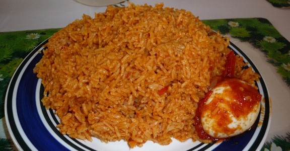

How To Prepare Jollof(My Secret recipe)

Origin of Jollof
Jollof is common amongst countries in West Africa. Its a rice based meal and can be taken alone.
Its a very popular food
It can be taken with chicken, fish and boiled or fried egg
Ingredients
- Rice
- Tomatoes
- Onions
- pepper
- sunflower oil
- Tomatoe paste
- Smoked salmon
- Maggi cubes
- curry powder
- rosemary spice
- lemon juice
- cucumber, carrot
- fried chunks of goat meat
Procedure
- Make tomatoe sauce and keep overnight
- add the tomatoe sauce in a new pot over fire and add some lemon juice about half a glass
- Wash rice
- add the rice to the stew and add some water
- lower the gas to very low heat and allow the rice to cook
- Stir the rice intermittently and carefully
- add rosemary
- chop carrot and cucumber into small pieces and add to the rice
- when rice is almost soft, cover with a clean napkin
- add the fried goat meat and allow to cook for a while
- Food is ready after 5 mins.....serve hot